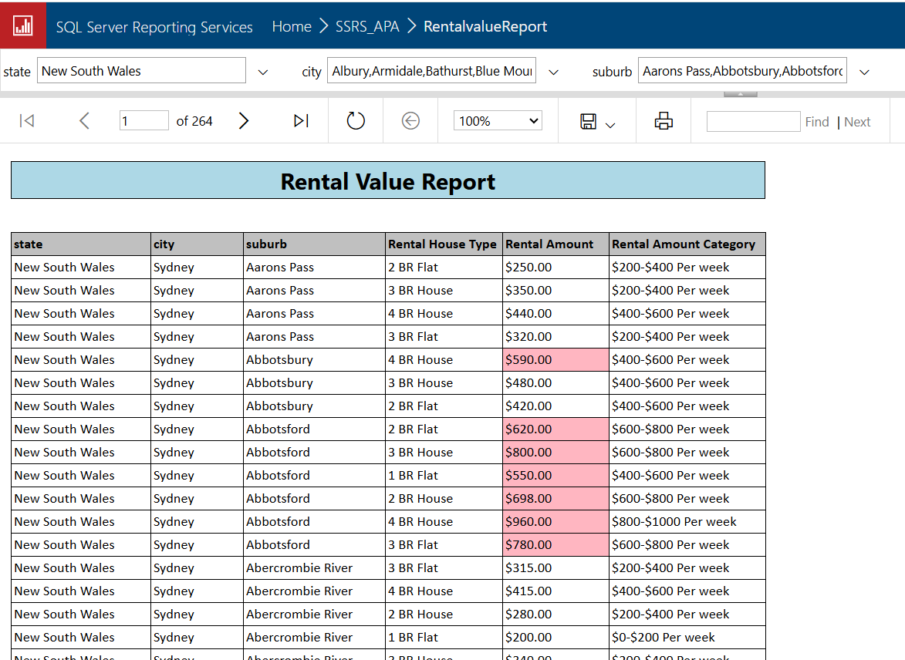

Property Analysis - Advanced Sprint 2
To build a suite of interactive SSRS reports that allow users to analyze real estate and community data by selecting a specific state, city, and suburb, supporting data-driven decision-making in property investment and community planning.

RentalValue report executed on SSRS Web Portal with location filters and rental highlights
Project Overview
- This project demonstrates the use of SQL Server Reporting Services (SSRS) to develop dynamic, parameter-driven reports from a dimensional Data Warehouse model. The solution is designed to help users explore key real estate metrics such as property values, rental trends, transport access, school zones, and crime rates at varying geographic levels (state, city, and suburb).
- Tools Used: SQL Server | SSRS (SQL Server Reporting Services) | SSMS
- Techniques: Cascading parameters (State → City → Suburb), Conditional formatting, indexes
What I Did
- Connected SSRS to the Data Warehouse using SQL Server data source.
- Wrote optimized T-SQL queries for data retrieval
- Developed five separate SSRS reports with tailored layouts (table format)
- Implemented cascading parameters to enable intuitive user filtering.
- Applied styling and logic-based formatting to highlight key metrics.
- Validated data and improved load time with indexing strategy.
Tables Used
DimSuburb,DimSchool,DimTransportFactCrime,FactHouseValue,FactRentalValue
Key Deliverables
- House Value Report – Displays average house values by city with conditional formatting.
- Rental Value Report – Shows rental trends with visual highlights for high-rent areas.
- Transport Stations Report – Lists local public transport options per state, city, suburb
- School Locator Report – Identifies nearby schools within the selected location.
- Crime Summary Report – Summarizes recorded crime recorded incidents at the [offence category] level